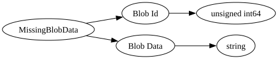

| Field Name | Field Type | Field Constraints | Field Notes |
|---|---|---|---|
| Blob Id | unsigned int64 | <div style="padding-left: 0px;">Minimum = 0</div> | |
| Blob Data | string | Subchunk data (see https://gist.github.com/Tomcc/a96af509e275b1af483b25c543cfbf37) plus biome data |